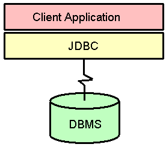
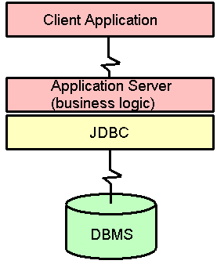

| Reference | Help | Introduction | Slide Show | Class Hierarchy | InterClient | ||
| PREV | NEXT | FRAMES | NO FRAMES | ||
Ok, we've covered driver architecture, now let's look at application architecture.
Two Tier Architecture

Three Tier Architecture
 The 2-tier architecture is your traditional client/server application architecture, it doesn't matter what class jdbc driver architecture you're using, that's irrelevant.
A 3-tier architecture is a term usually applied to an application architecture. But the term may also be applied to driver architectures as well. The documentation for class 3 drivers will describe their driver architecture as 3-tier, but the usual meaning of the term is a 3-tier application architecture that is independent of the architecture of jdbc driver used.
We've seen how to distribute the driver into client/server components, now a tiered application architecture distributes the application itself into client and server components.
The middle tier maintains control over access and updates to your corporate data.
A tiered architecture is more secure. The application server regulates access to data according to business rules and application requirements.
The client application could be an applet, that's irrelevant.
The communication between the client application and the application server involves high level requests, not jdbc requests. And the protocol used between client application and application server is not defined - it could be CORBA or RMI (both RPCs) and is usually RPC-based, but it could also be a message based protocol.
So there's two kinds of middleware in the 3-tier model, the application middleware to the middle tier, and the database middleware to the 3rd tier. In turn, for each of these middlewares, there are 2 kinds of distributed communication protocols: RPC based or message based.
The application middleware could be RPC-based or message-based, but the database middleware is almost always message based for efficiency reasons. The message protocol for database middleware is vendor specific, based on proprietary protocols, and is hidden from the application layers.
The application server may employ enterprise java beans (a component model for the server), or CORBA objects. The default communication protocol between distributed enterprise java beans is RMI, but Sun is currently working on RMI over IIOP so that RMI will be CORBA compatible.
| Reference | Help | Introduction | Slide Show | Class Hierarchy | InterClient | ||
| PREV | NEXT | FRAMES | NO FRAMES | ||